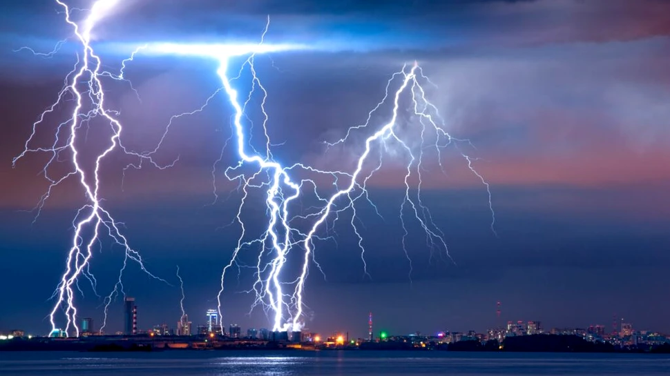

Lecția 5 – Fulgerul. Curentul electric
„Fizica nu este o materie dominată de formule, ci de logică"
1. Ce este fulgerul
Fulgerul este o descărcare electrică produsă în atmosferă.
El apare când între nori sau între nor și Pământ se acumulează diferențe mari de sarcină electrică.

- Acumularea de sarcini electrice în nori
- Descărcarea electrică între nori sau spre Pământ
- Calea luminoasă a fulgerului prin atmosferă
- Relația dintre fulger și tunet
2. Fulger și trăsnet
Când descărcarea electrică ajunge la sol, ea este numită adesea trăsnet.
Acesta poate fi periculos pentru oameni, animale, clădiri și instalații electrice.
- Fulgerul - descărcarea electrică în sine (fenomenul atmospheric)
- Trăsnetul - fulgerul care atinge Pământul și este periculos
- Tunetul - sunetul produs de fulger (unda sonoră)
3. Ce este curentul electric
Curentul electric reprezintă deplasarea ordonată a sarcinilor electrice printr-un mediu.
În conductorii metalici, această deplasare este legată în special de mișcarea electronilor.
- Direcția - de la + la - (în mod convențional)
- Intensitate - cantitatea de sarcină pe unitate de timp
- Unitate de măsură - Amper (A)
- Purtători - în metale sunt electronii
4. Exemple din viața de zi cu zi
Curentul electric este folosit pentru:
- Iluminat - becuri, LED-uri, lămpi
- Încălzire - radiator, caloriferi, aragaz electric
- Răcire - frigider, aer condiționat
- Divertisment - televizor, calculator, telefon
- Transporturi - trenuri electrice, autobuzuri
- Medicină - aparate medicale, pacemaker
Fără curent electric, multe activități zilnice ar fi mult mai dificile.
- Permite iluminarea locuințelor și stradelor
- Putere pentru aparatele electrocasnice
- Comunicații (internet, telefonie)
- Industrie și fabrici
- Scopuri medicale și de cercetare
5. Siguranța electrică
Lucrul cu electricitate necesită precauții speciale:
- Nu atinge priză cu mâinile ude
- Nu introduce obiecte metalice în priza
- Verific cablurile deteriorate înainte de utilizare
- Folosesc aparate certificate și sigure
- Sunez electricianul pentru reparații
Reține
- Fulgerul este o descărcare electrică naturală și pericloasă
- Curentul electric este deplasarea ordonată a sarcinilor electrice
- Descărcările electrice atmosferice (fulgere și trăsnete) pot fi periculoase
- Electricitatea are un rol esențial în viața de zi cu zi
- Siguranta electrică este foarte importantă
- Fulgerul și curentul electric sunt fenomene similare, dar în contexte diferite
Navigare
Butonul „Mergi mai departe" te duce direct la lecția următoare.